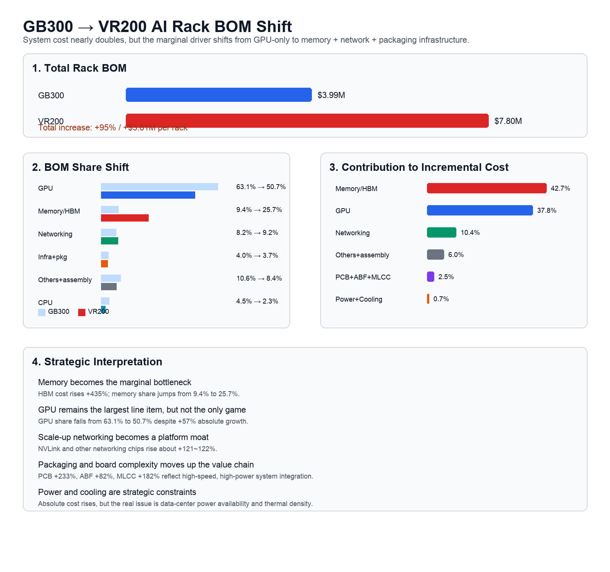

AI Infrastructure · Memory Market
GB300에서 VR200으로, AI Rack BOM이 말하는 산업 구조 변화
AI 인프라는 더 이상 GPU 단품 산업이 아니다. GB300에서 VR200으로 넘어가는 BOM 변화는 메모리, 네트워크, 패키징, 전력, 냉각이 함께 커지는 초대형 인프라 산업의 전환을 보여준다.
먼저, GB300과 VR200이 무엇인가?
이 글에서 비교하는 GB300과 VR200은 스마트폰 AP나 단일 GPU 카드가 아니다. AI 데이터센터에 들어가는 rack-scale AI system, 즉 CPU, GPU, HBM, NVLink switch, network, power, cooling이 한 묶음으로 설계되는 고밀도 AI 인프라 플랫폼으로 이해하는 것이 정확하다.
- GB300 NVL72는 NVIDIA Blackwell Ultra 세대의 rack-scale 시스템이다. NVIDIA 자료 기준으로 36개 Grace CPU와 72개 Blackwell Ultra GPU를 하나의 NVLink 도메인으로 연결하는 구조다.
- VR200은 NVIDIA의 다음 세대 Vera Rubin 계열 rack 플랫폼으로 보는 것이 자연스럽다. 공개 자료에서는 Vera CPU, Rubin GPU, ConnectX-9, BlueField-4, NVLink 기반 scale-up 구조가 함께 언급된다.
- 따라서 이 비교의 핵심은 “GPU 한 개 가격이 얼마나 올랐나”가 아니라, AI rack 전체가 얼마나 더 메모리·네트워크·전력·냉각 중심으로 바뀌는가다.
GB300 NVL72
구성 개념: Grace CPU + Blackwell Ultra GPU + HBM + NVLink switch + liquid cooling
읽는 법: 이미 GPU 중심 시스템을 넘어 rack 단위로 통합된 AI factory building block이다.
VR200
구성 개념: Vera CPU + Rubin GPU + HBM + NVLink scale-up + 차세대 네트워킹/냉각
읽는 법: 메모리와 연결 구조의 비용 비중이 더 커지는 AI rack 플랫폼이다.
그림: 본문 설명을 위해 자체 작성한 개념도. 구성 설명 출처: NVIDIA GB300 NVL72, NVIDIA Blackwell Ultra technical blog, NVIDIA Vera Rubin platform, Guru3D/Morgan Stanley BOM 추정치.

그림: BOM 비교 데이터를 바탕으로 자체 작성. 수치 출처는 Guru3D 기사에 인용된 Morgan Stanley 추정치.
핵심 결론
GB300에서 VR200으로 넘어가면서 AI rack 총 BOM은 약 399만 달러에서 780만 달러로 증가한다. 증가율은 95%다. 겉으로 보면 GPU 가격이 더 비싸졌다는 이야기처럼 보이지만, 실제 증가분을 분해하면 결론은 다르다.
특히 HBM 중심 Memory 항목은 37.4만 달러에서 200.2만 달러로 435% 증가한다. 전체 BOM 증가분 380.9만 달러 중 42.7%가 Memory에서 나온다. GPU 증가분 기여도 37.8%보다 크다.
GB300과 VR200 BOM 비교
| 항목 | GB300 | VR200 | 증가율 | 전략적 의미 |
|---|---|---|---|---|
| GPU | $2,520,000 | $3,960,000 | +57% | 여전히 핵심이지만 GPU 단독 경쟁은 아님 |
| CPU | $180,000 | $180,000 | 0% | 상대적 중요도 정체 |
| NVLink Switch chip | $64,800 | $144,000 | +122% | GPU 간 초고속 연결 중요성 증가 |
| Other networking chips | $261,000 | $576,000 | +121% | AI 클러스터 병렬처리 확대 |
| Memory, HBM 중심 | $373,939 | $2,001,600 | +435% | 가장 큰 변화. 병목이 메모리 대역폭으로 이동 |
| PCB | $35,100 | $116,730 | +233% | 고다층·고속 신호 PCB 수요 폭증 |
| ABF Substrate | $11,160 | $20,340 | +82% | 첨단 패키징 기판 중요성 확대 |
| MLCC | $1,530 | $4,320 | +182% | 고전력·고집적 시스템 부품 증가 |
| 총합 | $3,994,551 | $7,803,148 | +95% | AI 인프라 원가 거의 2배 상승 |
GPU는 여전히 크지만, 증가분의 주도권은 메모리로 이동
GPU는 여전히 가장 큰 단일 항목이다. 그러나 BOM 비중은 GB300의 63.1%에서 VR200의 50.7%로 낮아진다. 반대로 Memory는 9.4%에서 25.7%로 급등한다.
| 항목 | GB300 비중 | VR200 비중 | 해석 |
|---|---|---|---|
| GPU | 63.1% | 50.7% | 절대 금액은 증가하지만 BOM 내 지배력은 낮아짐 |
| Memory, HBM 중심 | 9.4% | 25.7% | 가장 큰 구조 변화 |
| Networking chips | 8.2% | 9.2% | scale-up/scale-out 연결 중요성 상승 |
| CPU | 4.5% | 2.3% | AI rack 내 상대적 중요도 하락 |
증가분 기준으로 보면 변화는 더 선명하다. VR200으로 넘어가며 늘어난 비용 중 Memory/HBM이 42.7%, GPU가 37.8%, 네트워킹 칩이 10.4%를 차지한다.
Omdia 데이터와 연결되는 지점
이 rack-level BOM 변화는 Omdia의 반도체 시장 전망과 같은 방향을 가리킨다. Omdia의 Global Semi Market Summary 202605에서 2026년 반도체 매출 증가분의 86.3%는 Memory IC에서 나온다. Memory IC 비중은 2025년 27.5%에서 2026년 50.1%로 상승한다.
즉, macro market data와 rack BOM data가 같은 결론을 만든다. AI 반도체 사이클의 출발점은 GPU였지만, 수익 풀과 병목은 메모리로 확장되고 있다.
웨이퍼보다 중요한 것은 qualified memory system output
앞선 Silicon Demand Forecast 검토에서는 2026년 300mm wafer output 증가율이 demand-driven silicon 증가율보다 높았다. 따라서 전체 blank wafer 총량이 절대적으로 부족하다고 보기는 어렵다.
그러나 이번 BOM 데이터는 더 중요한 병목을 보여준다. 문제는 wafer 총량이 아니라 HBM용 advanced DRAM wafer allocation, TSV, bonding, stack, test, GPU package와 HBM 통합, CoWoS와 같은 advanced packaging throughput이다.
산업별 수혜 구조
| 영역 | 대표 수혜 산업/기업 유형 | 인사이트 |
|---|---|---|
| GPU | NVIDIA | 여전히 가장 큰 단일 원가 항목 |
| HBM | SK hynix, Samsung, Micron | 증가분 1위. AI 원가 상승의 중심 |
| Networking | Broadcom, Marvell, NVIDIA networking | multi-GPU 연결과 scale-up fabric의 핵심 |
| PCB/ABF | 고다층 PCB, substrate 업체 | 고속 신호·고전력 보드 복잡도 증가 |
| MLCC/전력 | Murata, Samsung Electro-Mechanics, 전력부품 업체 | 고전력·고집적 시스템 부품 수요 증가 |
| Cooling | 액침냉각, CDU, HVAC | thermal density가 핵심 제약으로 부상 |
| Power infrastructure | 변압기, 전력망, 원전, 가스발전, UPS | AI는 결국 전기와 열의 산업 |
결론
GB300에서 VR200으로 넘어가는 BOM 데이터는 AI 산업의 성격 변화를 매우 분명하게 보여준다. 과거에는 AI 인프라를 GPU 산업으로 보는 관점이 맞았다. 그러나 VR200 세대로 가면 이 관점은 부족하다.
투자와 산업 분석의 초점도 바뀌어야 한다. GPU 단품 판매량만 볼 것이 아니라 HBM attach와 memory dollars per rack을 봐야 한다. HBM만 볼 것이 아니라 CXL, eSSD, KV cache, memory hierarchy를 봐야 한다. 칩만 볼 것이 아니라 PCB, substrate, MLCC, cooling, power grid를 같이 봐야 한다.
출처와 한계
이 글의 GB300/VR200 BOM 비교 수치는 Guru3D의 “NVIDIA Vera Rubin AI Rack Cost Reportedly Hits $7.8 Million” 기사에 인용된 Morgan Stanley 추정치를 바탕으로 정리했다.
해당 수치는 NVIDIA의 공식 가격표가 아니라 공급망 및 애널리스트 기반 BOM 추정치다. 따라서 실제 고객별 계약 가격, 구성 옵션, 공급 시점, 메모리 가격, ODM 조건에 따라 달라질 수 있다. 이 글의 목적은 정확한 판매가 산정이 아니라, GB300에서 VR200으로 넘어갈 때 비용 증가의 중심이 GPU 단품에서 메모리·네트워크·패키징·전력·냉각 인프라로 확장된다는 산업 구조 변화를 읽는 데 있다.
참고자료
* Grace CPU란 무엇인가: NVIDIA Grace CPU는 NVIDIA가 만든 데이터센터용 Arm 서버 CPU다. 일반 PC용 x86 CPU가 아니라, AI rack 안에서 GPU를 제어하고 데이터를 공급하며 CPU-GPU 간 고속 연결과 memory coherence를 지원하는 host CPU에 가깝다. NVIDIA 공식 자료에 따르면 Grace CPU Superchip은 두 개의 Grace CPU를 NVLink-C2C 900GB/s로 연결한 모듈이며, 총 144 Arm Neoverse V2 코어와 최대 960GB LPDDR5X 메모리를 제공한다. 출처: NVIDIA Grace CPU Superchip, NVIDIA Grace CPU Architecture.
* Grace CPU 가격 추정: NVIDIA는 Grace CPU의 공식 list price를 공개하지 않는다. 따라서 이 글에서는 Guru3D 기사에 인용된 Morgan Stanley BOM 추정치의 CPU 항목을 기준으로 역산했다. GB300 rack CPU 항목 $180,000을 NVIDIA GB300 NVL72의 Grace CPU 36개로 나누면 약 $5,000 per Grace CPU, 즉 Grace CPU 2개로 구성된 Superchip 기준 약 $10,000으로 해석할 수 있다. 이 숫자는 공식 판매가가 아니라 rack BOM 안에서 배정된 원가 추정치이며, 실제 가격은 고객 계약, 시스템 구성, 메모리 용량, ODM 조건에 따라 달라질 수 있다. 출처: NVIDIA GB300 NVL72, Guru3D/Morgan Stanley BOM 추정치.